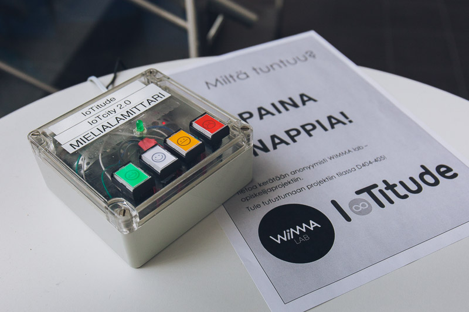

This is IoTitude
a virtual company that started
working at WIMMA Lab on IoTcity2.0 project on May 15th 2017.
The team consist of seven students from JAMK University of Applied Sciences.
Its goal was to develop an IoT-solution for study purposes.
Requirements of the solution were to handle large amounts of various
data and the platform to be stable, tested and secure.
IoTcity 2.0
The first three weeks were spent creating a demo for corporate visitors.
We created a physical IoT-device called "Harmitusmittari".
It has four buttons, which people can press to express their feelings.

The data from Harmitusmittari was routed through Kaa into Cassandra. The data was visualized to a webpage with Zeppelin. After the demo, we started to create the industrial version of IoTcity2.0. As a team, we solved all the project's problems step by step and the development was continuous and smooth. We also developed a test environment to run automated tests on the product before updating the production environment. Setup documentation for the product can be found from GitLab. There are two different documentations available - for a simple single-node environment and for production environment.